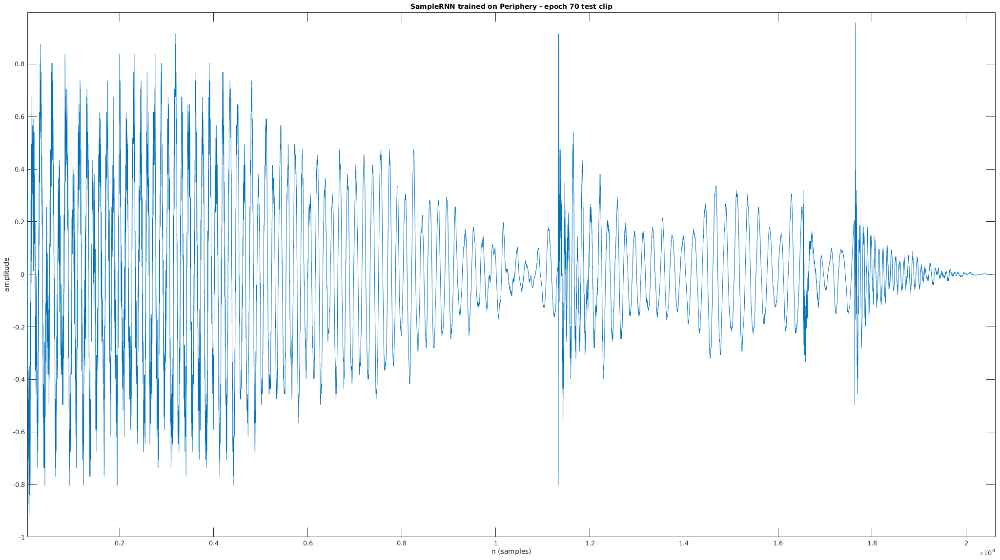
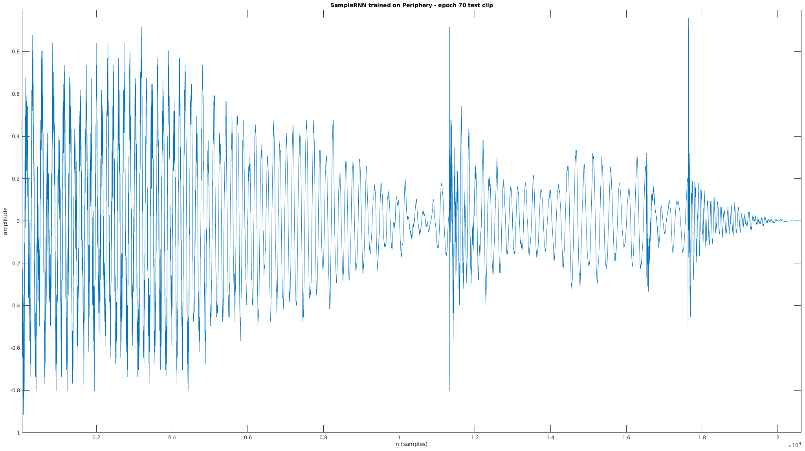
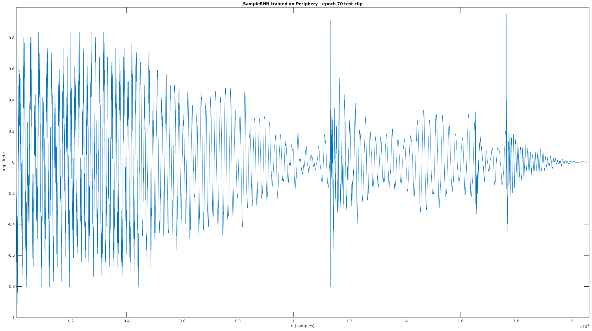
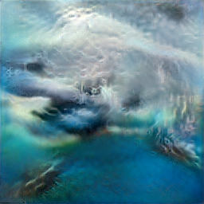
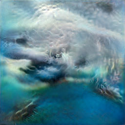

Without this parameter, the training would crash on my GPU (RTX 2070 SUPER) with a mysterious error message, "Fail to find the dnn implementation". It's an esoteric fix that one can find scattered across GitHub[13].
The Python setup is straightforward using conda[14] and following the project's README.md:
There's also a 3-tier option, but we initially had better results with 2-tier, so we don't use 3-tier. It doesn't have the modifications we made to 2-tier.
Table 1 and Figure 4 also show the 2-tier SampleRNN outperforming the 3-tier model in terms of likelihood and human rating respectively, which is very counterintuitive as one would expect longer-range temporal correlations to be even more relevant for music than for speech. This is not discussed at all, I think it would be useful to comment on why this could be happening.
Author's reply:
"Why 2-tier is outperforming the 3-tier model for music?"
- We did not expect that, but for any dataset and architecture structure, there is an optimal depth. Considering that this is a deep RNN (which introduces a form of recurrent depth, here very large) and the hypothesis that it is difficult to train such architectures in the first place, it is possible that alternative training procedures could yield better results with a deeper model.
Recall that in the SampleRNN paper, the multiple tiers of the RNN determined the learning of audio patterns at different temporal scales. This is reflected in the following diagram from the paper:
Higher RNN tiers map to wider temporal scales [3]
The lowest temporal scale (consecutive samples) represents very low-level audio features (e.g. timbre), while higher scales can (hypothetically) go as far as representing repeating choruses or verses minutes apart. As such, it's interesting to note that 2-tiers, or only two temporal scales of learning, performed better than 3-tier, which should hypothetically be enforcing even longer-scale temporal patterns (and music has temporal patterns as coarse as minutes apart, e.g. a repeating chorus).
However, as the author says, 2-tier SampleRNN may have a depth that makes it more optimal considering the training architecture of SampleRNN (or in other words, there needs to be an analysis of alternative training architectures to make 3-tier beat 2-tier).
SampleRNN configuration
I'll summarize the available SampleRNN hyperparameters and other customizeable steps compared across the original 2017 ICLR implementation, the Dadabots fork, the PRiSM fork which I use throughout the rest of this report, and finally my own modifications to the PRiSM parameters after experiment 0:
Original
Dadabots
PRiSM
Mine
Descr
RNN layers
4
5
4
5
Quality of results (dadabots note that 5 learns music better than 4)
Tiers
2 or 3
2 or 3 (2 recommended for good music)
3
2, 3
Tiers of RNN (more = wider temporal timescale, but...*)
Frame sizes (corresponds to tiers)
16
16
16,64
3: 16,64, 2: 16
Samples apart between low and high timescales
Sample rate
16000 (fixed)
16000
16000
16000
Sample rate of training/generating waveform (lower = faster learning, better able to learn long-timescale patterns)
Training input
No details
Chop albums into 8s + 1s overlap
Chop albums into 8s + 1s overlap
Chop albums into 8s + 1s overlap
Suggestions on how to prepare training data
Epochs
Not customizeable
Not customizeable
100
100, 250
Entire cycles of training on the same data (more = possibly better learning, but not necessarily)
The frame sizes 16, 64 correspond to the additional tiers of SampleRNN (the first tier is always n = 1, or consecutive samples). A 2-tier SampleRNN architecture has a wider temporal scale of learning at 16 frames, while a 3-tier SampleRNN architecture learns at 16 and 64 frames.
Preliminary experiments: training on synthetic waveforms
Since SampleRNN operates on samples, it means I can use non-musical synthetic waveforms to verify some basic behaviors. Disclaimer that this is just an attempt to peek at SampleRNN's black box decisions, and not a rigorous experimental method. Using MATLAB, I generated some different sequences and permutations of floating point vectors:
The above commands create a variety of "fake" wav files containing some simple sequences of floats, which I then used as training inputs for SampleRNN.
Training to fit a sequence of all 0.3
The first thing I verified is whether we can simply train SampleRNN only on samples [0.3, 0.3, ...] and have it be 100% overfitted (and generate exactly only [0.3, 0.3, ...] as a result).
The training command (which outputs an example generated clip that I used as y[n]) is as follows. I mimicked the real preprocessing and training steps:
# chop up the fake wav clip of [0.3, 0.3, ...] into 8-second overlapping clips
$ python ./chunk_audio.py --input_file ./0_3.wav --output_dir ./testdata-waveform-0.3/ --chunk_length 8000 --overlap 1000
# train on the folder of [0.3, 0.3, ...]
$ python train.py --id testdata-waveform-0.3 --data_dir ./testdata-waveform-0.3 --num_epochs 5 --batch_size 64 --sample_rate 16000
# the displayed y[n] is emitted during training in "generated/testdata-waveform-0.3/testdata-waveform-0.3_epoch_1.wav"
Within 2 epochs (~15 minutes of training), the loss was 0.0% and accuracy was 100.0%, indicating that the model learned quickly how to generate the value 0.3:
Interestingly, the values of the generated waveform aren't exactly 0.3 but 0.306 - I don't know where that comes from but it could be from the round-trip through SampleRNN's quantization layers.
Training on a mixture of 0.3 and 0.75
My next test was to see what happened if I trained on a mixture of 0.3 and 0.75. Recall the creation command:
At a sampling rate of 16000 Hz, this is 5 seconds of 0.3 followed by 5 seconds of 0.75 (repeated 2x overall). In addition to the clip emitted during training, I also generated an additional 4 clips. The results were as follows (n.b. this is a dense stem plot that makes it look like colored rectangles):
Every generated clip had the value 0.306, and not 0.75. The model only learned how to generate 0.3s from observing a 50/50 split of monolithic sequences of [0.3, ...] and [0.75, ...], which is an interesting outcome. I generated 10s of clips that all only contained 0.3.
Training on interleaved 0.3,0.75 consecutive sample pairs
The lowest and most important temporal scale of learning of SampleRNN is on the level of individual consecutive samples. An easy experiment to verify this is to create a sequence of [0.3, 0.75, 0.3, 0.75, ...] and validate that the output is similar:
The output is the same, which is expected.
Training on mixed interleaved 0.3,0.75 and 0.3,0.66 consecutive sample pairs
In a similar experiment to mixing 0.3 and 0.75 (where the outcome was that only 0.3 was generated as an output), let's train on a 50/50 mix of interleaved pairs of 0.3,0.75 and 0.3,0.66:
As we saw with the 50/50 mix of 0.3 and 0.75, the output seems to adhere to only one of the training inputs, and not both.
Training with 16-sample temporal patterns
Next up is to test the "tiers = temporal scales of learning" hypothesis. To recap, in the 3-tier SampleRNN, there should be learning at the level of consecutive samples, followed by learning on broader frames that are of size 16 and 64 samples. Let's create another fake waveform with a ramp that repeats at every 16 samples:
Note that while this is very different from a real pattern in music, it should still count as a pattern in the waveform that SampleRNN can learn:
This is one of my favorite results of the preliminary experiments, showing that SampleRNN could faithfully recreate the ramping pattern, but with some oddities (negative-valued samples).
The accuracy and loss capped at the following values after 1 epoch:
An interesting note is that during the training I immediately noticed that even from the first epoch of training on 32-sample temporal patterns, the loss was lower and accuracy higher:
Results:
It looks to me as if SampleRNN overfitted (desired, in this case) very well to the ramp-of-ramps pattern that spanned multiple temporal timescales.
Preliminary tests - thoughts
We can see that 3-tier SampleRNN generalizes to several different waveform patterns, from simple 16-sample ramps to a 200-sample meta-pattern (ramp of ramps).
One unexplained result is why, when presented with a 50/50 mix of different outcomes, SampleRNN adheres to only one of the training datasets and doesn't generate two different results. In the 50/50 tests, I would have expected at least 1 generated clip to only consist of [0.75, ...].
Experiment 0: training on a single album
The next thing is to try it on real music - Animals as Leaders' self-titled album:
I downloaded the audio using youtube-dl, converted it to 16kHz mono with ffmpeg (recommended for SampleRNN to perform better), split it up into chunks (ignoring silence) using the prism-samplernn script chunk_audio.py, and ran the training with default parameters:
This emitted some generated clips during the training. Let's listen to 2 of the more musically interesting clips (a lot of them are just silence), generated at epoch 20 and 85 of the 100-epoch training. An epoch is one cycle of the entire training dataset - this means that the neural network observed the same album 100 times iteratively to learn how to model it:
Epoch 20:
Epoch 85:
After the training was done (it took ~3 days on my machine), I generated 2 10-second clips of what I thought would be "Animas-as-Leaders-esque" music. The generate command is:
This says to use the model checkpoint 90. Even though we specified 100 epochs in the training, the model has an intelligent stop when it sees that additional training is not improving the model. In this case, it seems like 90 epochs exhausted the model's learning ability. Here's one of them (both sound equally bad):
Experiment 0 lessons
I applied tweaks that Karl Hiner[15] did in his experiments - for my next experiment, I would try some or all of the following:
Increase the number of RNN layers from 4 to 5 to try to create more cohesive music
Use more training data than just one album
Increase epochs from 100 to 250 (longer training may lead to better results)
Also since the 3-tier architecture of the PRiSM-SampleRNN implementation may be producing worse music than 2-tier, a subsequent experiment I will attempt is to modify the PRiSM-SampleRNN implementation from 3 to 2 tiers.
Experiment 1: longer training on multiple albums
For my next experiment, I downloaded instrumental versions of the albums of Periphery (instrumental - I didn't want vocals mixing into the results, as I want to focus on musical instruments acoustics) and Mestis (an instrumental band). The data fetch and preprocessing scripts are available in my prism-samplernn fork:
#!/usr/bin/env bash
echo "Fetching training data - youtube-dl wav files for Mestis and Periphery albums"
# youtube playlists for Mestis - Eikasia, Polysemy, Basal Ganglia
mestis_album_1="PLNOrZEIoYAMgLJeZeCUEhABLPz7yqkyfI"
mestis_album_2="PLfoVvOUi1CqV0O-yMdOvTff_vp8hOQnWi"
mestis_album_3="PLRK89uMjq03BMsxBKFGBcDAh2G7ACwJMK"
youtube-dl -ci -f "bestaudio" -x --audio-format wav -i ${mestis_album_1}
youtube-dl -ci -f "bestaudio" -x --audio-format wav -i ${mestis_album_2}
youtube-dl -ci -f "bestaudio" -x --audio-format wav -i ${mestis_album_3}
# youtube playlists for instrumental Periphery albums - Periphery III, I, II, IV, Omega, Juggernaut
periphery_album_1="PLSTnbYVfZR03JGmoJri6Sgvl4f0VAi9st"
periphery_album_2="PL7DVODcLLjFplM5Rw-bNUyrwAECIPRK26"
periphery_album_3="PLuEYu7jyZXdde7ePWV1RUvrpDKB8Gr6ex"
periphery_album_45="PLEFyfJZV-vtKeBedXTv82yxS7gRZkzfWr"
periphery_album_6="PL6FJ2Ri6gSpOWcbdq--P5J0IRcgH-4RVm"
youtube-dl -ci -f "bestaudio" -x --audio-format wav -i ${periphery_album_1}
youtube-dl -ci -f "bestaudio" -x --audio-format wav -i ${periphery_album_2}
youtube-dl -ci -f "bestaudio" -x --audio-format wav -i ${periphery_album_3}
youtube-dl -ci -f "bestaudio" -x --audio-format wav -i ${periphery_album_45}
youtube-dl -ci -f "bestaudio" -x --audio-format wav -i ${periphery_album_6}
mkdir -p periphery-raw
mkdir -p mestis-raw
find . -maxdepth 1 -mindepth 1 -type f -iname '*PERIPHERY*.wav' -exec mv {} periphery-raw/ \;
find . -maxdepth 1 -mindepth 1 -type f -iname '*MESTIS*.wav' -exec mv {} mestis-raw/ \;
find . -maxdepth 1 -mindepth 1 -type f -iname '*Javier*.wav' -exec mv {} mestis-raw/ \;
find . -maxdepth 1 -mindepth 1 -type f -iname '*Suspiro*.wav' -exec mv {} mestis-raw/ \;
find . -maxdepth 1 -mindepth 1 -type f -name '*.wav' -exec rm {} \;
mkdir -p mestis-processed
mkdir -p periphery-processed
echo "Processing each wav file to 16kHz mono"
for f in mestis-raw/*.wav; do
ffmpeg -i "${f}" -ac 1 -ar 16000 "mestis-processed/$(basename "$f")";
done
for f in periphery-raw/*.wav; do
ffmpeg -i "${f}" -ac 1 -ar 16000 "periphery-processed/$(basename "$f")";
done
mkdir -p periphery-chunks
mkdir -p mestis-chunks
mkdir -p mixed-chunks
for f in mestis-processed/*.wav; do
python ../chunk_audio.py --input_file "${f}" --output_dir mestis-chunks --chunk_length 8000 --overlap 1000
python ../chunk_audio.py --input_file "${f}" --output_dir mixed-chunks --chunk_length 8000 --overlap 1000
done
for f in periphery-processed/*.wav; do
python ../chunk_audio.py --input_file "${f}" --output_dir periphery-chunks --chunk_length 8000 --overlap 1000
python ../chunk_audio.py --input_file "${f}" --output_dir mixed-chunks --chunk_length 8000 --overlap 1000
done
What the script does is:
Fetch files for every Mestis song (from YouTube playlists + youtube-dl)
Fetch files for every instrumental Periphery song (from YouTube playlists + youtube-dl)
Pre-process them into 16kHz mono with ffmpeg (for optimal training)
Apply the chunk_audio.py script to split into non-silent 8-second chunks with 1 second overlap
Create 3 sets of training data - periphery-chunks, mestis-chunks, mixed-chunks
My intention was to train the model on each of the sets of training chunks, to create generated music that:
Here's a 30-second clip output from the training on Periphery only:
Another trait is that most generated audio consists of silence. I was very lucky to get almost 30 seconds of musical content in a single clip. Subjectively, this sounds nothing like Periphery:
Some more clips show the high-pitched output (which is melodic, but again, seemingly bizarre when trained on downtuned palm-muted rhythm guitar riffs).
Epoch 67:
Epoch 70:
Overfitting to a single song, Make Total Destroy
Since SampleRNN was trained on 6 different albums, let's narrow down why it wasn't able to create Periphery's characteristic sound by overfitting specifically on the song shown above.
After creating a test dataset with only the song Make Total Destroy and training on it for 100 epochs, the model reaches the following loss and accuracy:
The above clips show collections of realistic note onsets. One of my original statements about WaveNet and SampleRNN was that they could produce music with convincing dynamics and timbre, to make us believe real humans played it. Observing various aspects of the waveform in the time and frequency domain should be useful.
Let's view each clip (epochs 67, 70) in the time domain and frequency domain (with a spectrogram):

Although this is subjective, one can see the dynamic nature of the produced audio in the plots above. It really does look like there are real musical variations in the complex waveform (aside from the totally blank silences which are odd in real music).
Mu-law vs linear quantization
Karl Hiner's blog post touches on WaveNet's mu-law quantization, and claims it sounds better than SampleRNN's linear quantization. In fact, I found that every SampleRNN implementation I found had options for linear and mu-law quantization (perhaps it was added later). In fact the original ICLR 2017 paper even has an "a-law quantization" (similar to mu-law). Let's hear what each sounds like:
Periphery epoch 83, mu-law quantization:
Periphery epoch 83, linear quantization WARNING! LOUD!:
In my subjective listening test, the linear quantization output is very loud, almost to the point of distortion and clipping. The mu-law quantization is outputting music with more subtle volume, possibly since its more suited for the logarithmic human experience of loudness.
Abandoning the original hypotheses
It took 1 week to complete the training on Periphery only. My limitation is computational power. There are issues today about "AI democratization", and my experiments demonstrate the difficulty of black-box computational models where the large companies or labs publishing papers have massive advantages in hardware and in-house neural network/machine learning expertise (FIND REFERENCE FAANGMAN NEURAL NETWORKS).
The results were very different from my expectations:
The resulting generated audio is mostly silence and junk
There are some interesting potentially musical sounds, but it's all high-pitched whistling and doesn't contain any characteristics of the band Periphery (palm-muted distorted guitar chords, etc.)
I have to generate 100s or 1000s of clips and curate the results to create a final result - the chances of getting 1 cohesive "song" (let's say, 2 minutes of contiguous music) are pretty slim
With the demonstrated poor quality of results (e.g. generated audio that sounds nothing like the band), my original hypotheses were debunked. I mixed the Mestis data into the Periphery data, and continued training the model (that was initially trained only on Periphery for 100 epochs) for 250 epochs. At this point my goal was to "embrace the weird" and see what sort of strange music I can create. The sum total of all my training and experiments (including failed starts) for 3-tier SampleRNN was 3 weeks.
Training results
The results of training SampleRNN are stored in the logdir directory, in timestamped directories storing checkpoints for intermediate epochs in training. Here's a tree view of of the training. The size of the training directory is 51GB, after having been trained on all of the albums listed above (709MB of music):
Experiment 2: does 2-tier SampleRNN make better music?
The next step is to use the SampleRNN implementation most successful for producing music - that of the dadabots. Recall that my earlier hestitation for using the dadabots code was how old the dependencies were. As such, it was slightly trickier to get up and running than the modern Tensorflow 2 PRiSM fork.
The full install steps for a functional dadabots SampleRNN (with notes) were as follows:
# we need python 2.7 for dadabots sampleRNN
# create a conda environment
$ conda create -n dadabots_SampleRNN python=2.7 anaconda
$ conda activate dadabots_SampleRNN
# we need Theano==1.0.0 - newer breaks
(dadabots_SampleRNN) $ conda install -c mila-udem -c mila-udem/label/pre theano==1.0.0 pygpu
# we need Lasagne (based on Theano) 0.2.dev1
# this command installs 0.2.dev1 correctly - suggested by https://github.com/imatge-upc/salgan/issues/29
(dadabots_SampleRNN) $ pip install --upgrade https://github.com/Lasagne/Lasagne/archive/master.zip
# we need to create a ~/.theanorc file with some cudnn details
# cudnn.h is installed on my system through Fedora repos, as mentioned previously
#
# nvcc requires an older GCC, 8.4, which I already had set up
$ cat ~/.theanorc
[dnn]
include_path = /usr/include/cuda
[global]
mode = FAST_RUN
device = cuda0
floatX = float32
[nvcc]
compiler_bindir = /home/sevagh/GCC-8.4.0/bin
# at this point, we have a working dadabots 2-tier SampleRNN model
# install some extra pip packages
(dadabots_SampleRNN) $ pip install graphviz pydot pydot-ng
Training data preparation
Curating neural generated results
An important thing to note is that the Dadabots focus heavily on curating[16] the resultant audio clips. From a blackbox neural network that produces any kind of audio, from silence, to a cacophony of sounds, and everything in between, one needs to curate the results to combine them into a cohesive piece of music.
The goal of my automated curation script is to:
Load every clip generated by the trained SampleRNN model
Trim out the silence
Potentially apply some MIR techniques* to group similar clips together, to create the sense of a "cohesive" musical piece
Concatenate the result clips of sound with crossfading
*Ideally, we would use popular MIR Python libraries (librosa, madmom, Essentia) to assist us in the curation step, e.g. by grouping similar clips by their musical content. However, as this is more in the domain of MUMT 621 (music information retrieval), and not an easy task, I won't spend too much time on it.
I want to minimize the amount of visual/manual audio curation that I do, and rely only on the simple curation listed above.
Generating weird music with the 3-tier trained model
First, I use the trained model described earlier to generate audio clips at various epochs. I chose the epochs randomly - the ones before checkpoint 100 are trained only on Periphery, while the ones after checkpoint 100 are trained on a mix of Periphery and Mestis (aka "Mestiphery").
According to the dadabots' README[18], they don't necessarily accept that the latest training epoch is the best one. That's why I picked a variety of epochs:
However, we found the latest checkpoint does not always create the best music. Instead we listen to the test audio generated at each checkpoint, choose our favorite checkpoint, and delete the newer checkpoints, before generating a huge batch with this script.
I generated sequences of different durations. The generate commands are as follows:
After listening to several of the files manually, I noticed that the lower epochs produce better, more cohesive, and longer bits of music. This to me indicates the failure of experiment 2, of mixing Periphery + Mestis and training for 250 epochs. This could be due to the nature of the training data - the neural network is trying to generate samples that minimize error for two distinct musical artists and styles, so it can resort to outputting nothing (to minimize numerical error between the two sets of training data). Also, like the Dadabots say, perhaps training for too long isn't beneficial.
Chromaprint-based curation script
The first tool I use in the curation script is librosa's trim silence[20] to remove leading and trailing silence from the generated clips. This helps as the majority of clips have some musical content but lots of silence in between.
The next thing I need is to be able to compare the pieces of musical content/non-silence with each other, to concatenate clips by similarity. This should have the effect of creating a maximally cohesive piece of music. I settled for the chromaprint[21] chromaprint. Using chromaprints, we can get an array of 32-bit integers representing the "acoustic fingerprint" of a waveform.
Combining these two elements is the first job of the curation script:
for wav_file in os.listdir(p):
full_path = os.path.join(p, wav_file)
print('trimming silence and computing chromaprint for {0}'.format(full_path))
x, _ = soundfile.read(full_path, dtype='float32')
# trim trailing and leading silence
x_trimmed, _ = librosa.effects.trim(x, top_db=50, frame_length=256, hop_length=64)
fingerprint = es.Chromaprinter(sampleRate=args.sample_rate)(x_trimmed)
int_fingerprint = ai.chromaprint.decode_fingerprint(bytes(fingerprint, encoding='utf-8'))[0]
all_audio[full_path] = {
'raw_audio': x_trimmed,
'chromaprint': int_fingerprint,
}
This code extracts sequences of non-silent music from the generated clips, and stores their chromaprints. We also need a way to compare the arrays of 32-bit integer chromaprints, to be able to rank the generated music clips by their similarity with other clips. For this I borrowed some code that computes a correlation between lists of integer chromaprints[22]. I rank clips by maximum correlation in their chromaprints:
# naive O(n^2) comparison
for filename1, data1 in all_audio.items():
for filename2, data2 in all_audio.items():
print('comparing chromaprint correlation for {0}, {1}'.format(filename1, filename2))
if filename1 == filename2:
# don't compare a file to itself
continue
try:
chromaprint_correlation = correlation(data1['chromaprint'], data2['chromaprint'])
except:
continue
correlation_scores[chromaprint_correlation] = (filename1, filename2)
The last part of the script sorts clips by maximum correlation in their chromaprints, and accumulates them in a "total_curated.wav" file:
# sort by the most highly correlated pairs of audio
sorted_correlation_scores = dict(sorted(correlation_scores.items(), reverse=True))
total_audio = None
for v in sorted_correlation_scores.values():
print('concatenating audio by similarity')
# if we've already taken a clip before, ignore
if v[0] not in all_audio.keys() or v[1] not in all_audio.keys():
continue
# keep a running accumulation of similar clips
if total_audio is None:
total_audio = all_audio[v[0]]['raw_audio']
else:
total_audio = numpy.concatenate((total_audio, all_audio[v[0]]['raw_audio']))
total_audio = numpy.concatenate((total_audio, all_audio[v[1]]['raw_audio']))
# delete the data we don't need anymore
del all_audio[v[0]]
del all_audio[v[1]]
print('writing output file')
soundfile.write("total_curated.wav", total_audio, args.sample_rate)
This gives a 24-minute song (when run on all of the generated clips mentioned previously). Although cacophonous and random, it actually sounds like (very weird) music. Also, it emphatically does not sound like Periphery or Mestis, the two bands which supplied the training data.
Coral Reefer
When life gives you lemons, you make lemonade. Given a 24-minute vague, experimental piece of music, I decided to take it all the way and apply several effects to maximize the impression that it's a piece created by a quirky human musician. The title of the song is "Coral Reefer", and the effects I want to apply are a mix of guitar effects from the stoner metal genre, and some aquatic/underwater effects to fit with the artist theme of "1000 sharks".
Effects:
phaser
flanger
Album art generation
SampleRNN, which I've shown so far, is a model for unconditional music generation. NVIDIA's StyleGAN2stylegan2 is a model for unconditional image generation. I'll use StyleGAN2 to create the fake album art for 1000sharks. Given that both are unconditional waveform generators (audio = 1D waveform with an implicit time axis, image = 2D matrix, non-temporal), the training and generation procedures are broadly similar to what has been described.
Image pre-preprocessing script
StyleGAN2 expects the training data to be square images with the same power-of-two dimension. I wrote a Python script that automatically extracts the square middle dim pixels of an image and saves them as png files using Pillowpil:
from PIL import Image, ImageOps
seq = 0
# dim is a user-supplied argument
for p in args.inpaths:
for image in os.listdir(p):
img = Image.open(os.path.join(p, image))
thumbnail = ImageOps.fit(
img,
(args.dim, args.dim),
Image.ANTIALIAS
)
thumbnail.save(os.path.join(args.outpath, '{0}.png'.format(seq)))
seq += 1
I've committed this script (crop_images.py) to my fork of StyleGAN2my-stylegan2-fork. One thing to note is that I had to run conda install libwebp in my Conda environment before installing Pillow to support the webp image format.
Early on this page I mentioned vague "difficulties" when relying on older machine learning libraries. I encountered many of these with StyleGAN2:
I needed to install Python 3.7 which is the last version of Python that still supports Tensorflow 1.15 (an older version required for StyleGAN2)
I had to symlink several CUDA libraries to the 10.0 versions expected by Tensorflow 1.15:
After encountering several resource exhaustion crashes, I had to allow GPU memory growth, similar to the modification I had to make to SampleRNN: export TF_FORCE_GPU_ALLOW_GROWTH="true"
After downloading these to a directory, I ran the following commands:
# create 256x256 middle cropped images from sharks and album covers
$ python crop_images.py --dim=256 ./output-images/ ./shark-images/ ./metal-album-covers/
# preprocess cleaned cropped images using stylegan2's own tool
$ python dataset_tool.py create_from_images datasets/1000sharks/ ./output-images/
# train for config-e and kimg=1000
$ python run_training.py --data-dir=./datasets/ --dataset=1000sharks --config=config-e --total-kimg=1000
# generate 1000 images, randomly seeded, for curation
$ python run_generator.py generate-images --seeds=0-999 --truncation-psi=1.0 --network=results/00008-stylegan2-1000sharks-1gpu-config-e/network-final.pkl
I chose the training parameters config-e (the second-best configuration - config-f is the best configuration in StyleGAN2 but is a larger neural network that's much slower to train - these are explained TODO HERE), with kimg=1000 (this is similar to the epochs of SampleRNN, in that more is probably better and increases the training time).

 Every generated clip had the value 0.306, and not 0.75. The model only learned how to generate 0.3s from observing a 50/50 split of monolithic sequences of
Every generated clip had the value 0.306, and not 0.75. The model only learned how to generate 0.3s from observing a 50/50 split of monolithic sequences of  The output is the same, which is expected.
The output is the same, which is expected.
 It looks to me as if SampleRNN overfitted (desired, in this case) very well to the ramp-of-ramps pattern that spanned multiple temporal timescales.
It looks to me as if SampleRNN overfitted (desired, in this case) very well to the ramp-of-ramps pattern that spanned multiple temporal timescales.
 



 
